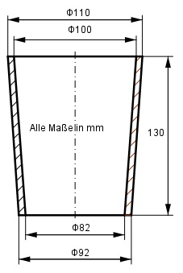

Aufgabe 292 Welche Höhe h muss eine Kunststoffscheibe mit einem Durchmesser von 50 mm haben, damit daraus die Buchse gepresst werden kann?

VScheibe = VBuchse Volumen der Buchse = = Kegelstumpf K1 - Kegelstumpf K2 л * h K1 = -------- * (r12 + r1 * r2 + r22) 3 r1 = 110 mm/2 = 55 mm r2 = 92 mm/2 = 46 mm л * 130 K1 = ---------- * (552 + 55 * 46 + 462) mm3 3 л * 130 K1 = ---------- * (3 025 + 2 530 + 2 116) mm3 3 K1 = 1 043 767 mm3 л * h K2 = -------- * (r32 + r3 * r4 + r42) 3 r3 = 100 mm/2 = 50 mm r4 = 82 mm/2 = 41 mm л * 130 K2 = ----------- * (502 + 50 * 41 + 412) mm3 3 л * 130 K2 = --------- * (2 500 + 2 050 + 1 681) mm3 3 K2 = 847 831 mm3 VBuchse = 1 043 767 mm3 - 847 831 mm3 = = 195 936 mm3 VScheibe = л * r2 * h |:( л * r2) r = 50 mm/2 = 25 mm VScheibe 195 936 mm3 h = ----------- = --------------- = 99,8 mm л * r2 л * 252 mm2